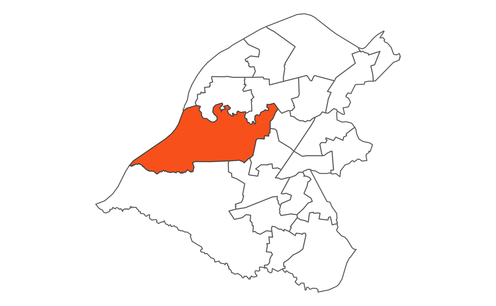

 Bucklow - St Martins is the second largest ward in the Borough. It is characterised by large areas of agricultural green belt land including Carrington Moss. Within the ward are a large industrial complex and Carrington Business Park. Within the south east part of the ward are the villages of Carrington and Partington and within the eastern area is the residential area of Sale. The northern boundary of the site is bounded by the River Mersey. The ward is home to the Manchester United and Manchester City Football Clubs training grounds. Bucklow - St Martins has three very distinct areas with pockets of high deprivation and isolated communities.